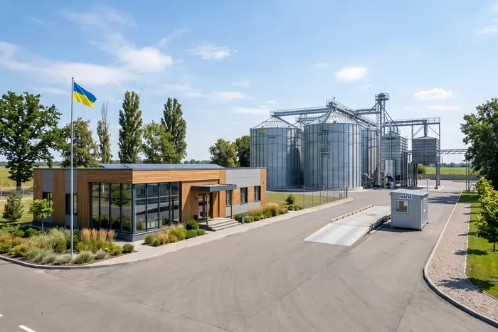

CONTACT
Let's talk about your volume
Send us the crop, the volume and the quality parameters you need — we will come back with a price and a dispatch schedule within one working day.
E-mail
info@centragro-plus.ua
Phone
+380 (43) 200-00-00
Address
4 Zarichna St, Soroka village, Vinnytsia district, Vinnytsia region, 22731, Ukraine
Hours
Mon–Fri 08:00–18:00 · weighbridge 24/7 during harvest

QUESTIONS
The essentials, briefly
What is the minimum consignment?
From 100 tonnes on spot. Forward contracts start at 500 tonnes and long-term agreements at 2,000 tonnes per season.
Who analyses the grain?
First our own laboratory at the elevator — the certificate travels with the consignment. If the buyer prefers, we accept an independent test as final, and you choose the accredited laboratory.
Can we collect with our own transport?
Yes. The weighbridge runs 24 hours a day during harvest, with dispatch from 30 tonnes per trip. There is also a rail siding for wagon consignments.
How is the price set?
From the basis on the day of dispatch, adjusted for the actual specifications of the consignment. Under a forward contract the price is fixed in the agreement and is not revised.
Are you VAT registered?
Yes, an LLC on the general tax system and VAT registered. Full document set: contract, specification, consignment note, laboratory certificate, VAT invoice.
Do you grow to order?
Yes, under a long-term agreement. Hybrid, area and quality parameters are agreed before drilling — a minimum of 500 hectares per contract.